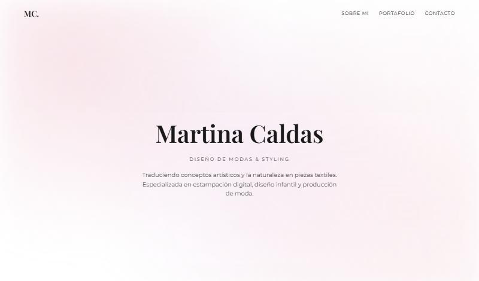
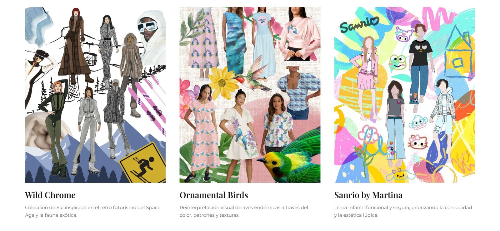
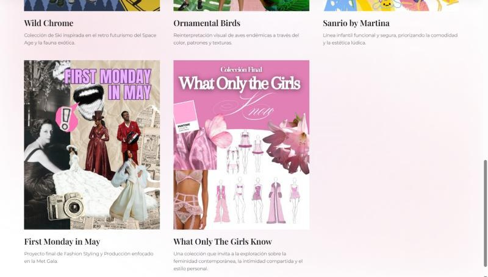
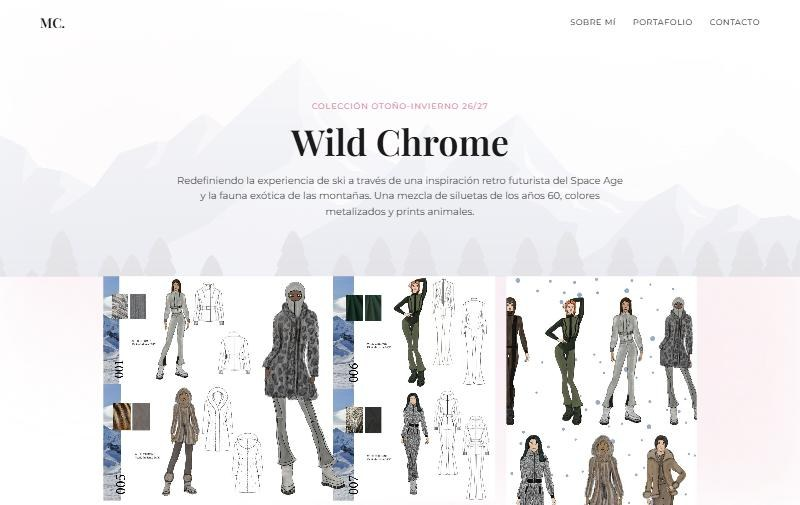
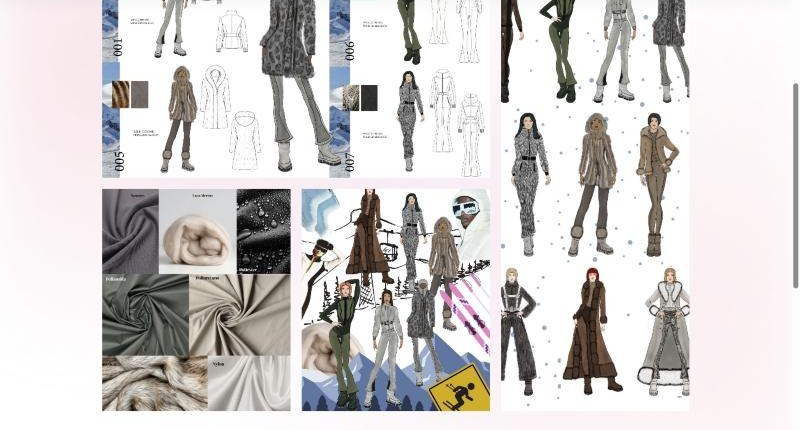
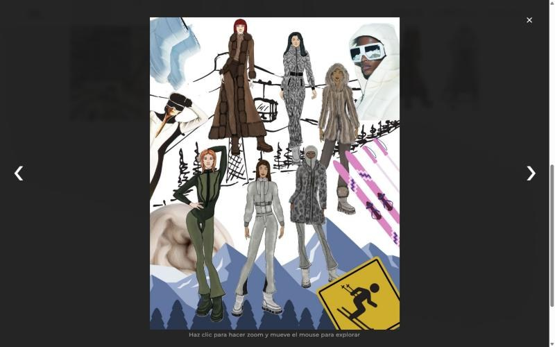
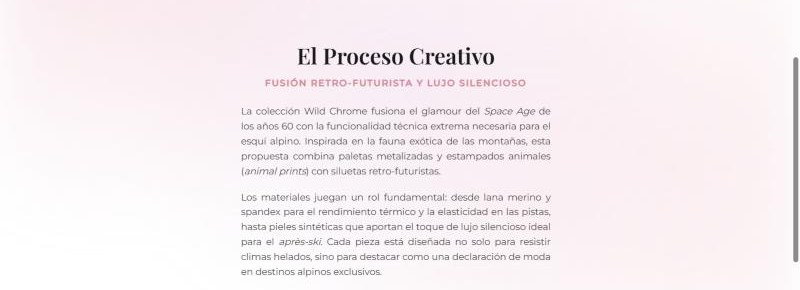

Martina es diseñadora de modas especializada en estampación digital, diseño infantil y producción de moda. Tenía muchos proyectos, pero no un lugar donde mostrarlos de forma profesional. El reto era construir un portafolio que se sienta como una revista de moda: elegante, simple y con todo el protagonismo puesto en sus colecciones.
Un buen portafolio no muestra todo, sino lo mejor. Revisamos juntos su trabajo y seleccionamos cinco proyectos que cubren la variedad de lo que sabe hacer, desde una colección técnica de ski hasta styling para la Met Gala:
Cada colección necesitaba una imagen que la resumiera de un vistazo. Creé las artes de portada como collages editoriales: figurines, texturas, referencias y elementos gráficos que cuentan el concepto de cada colección antes de leer una sola palabra.


Las cinco colecciones presentadas como tarjetas con su arte de portada.
La interfaz se diseñó para desaparecer y dejar hablar a la ropa:

Página de colección: título, temporada y descripción.
En moda, el detalle lo es todo: la textura de una tela, una costura, un estampado. Por eso cada colección tiene una galería en mosaico y un visor con zoom: al hacer clic en una imagen se abre a pantalla completa, se puede navegar entre láminas con flechas y hacer zoom moviendo el mouse para explorar los textiles.


Galería en mosaico y visor con navegación y zoom.
Debajo de la galería, cada colección cuenta su historia: la inspiración, los materiales y las decisiones de diseño. Al final, un botón permite ver o descargar el dossier completo en PDF, para quien quiera conocer el proyecto a fondo, como un reclutador o una marca.

Un portafolio publicado en la web que presenta a Martina como diseñadora profesional: cinco colecciones bien elegidas, portadas con identidad propia y una experiencia pensada para mirar de cerca su trabajo.
Ver Sitio en Vivo